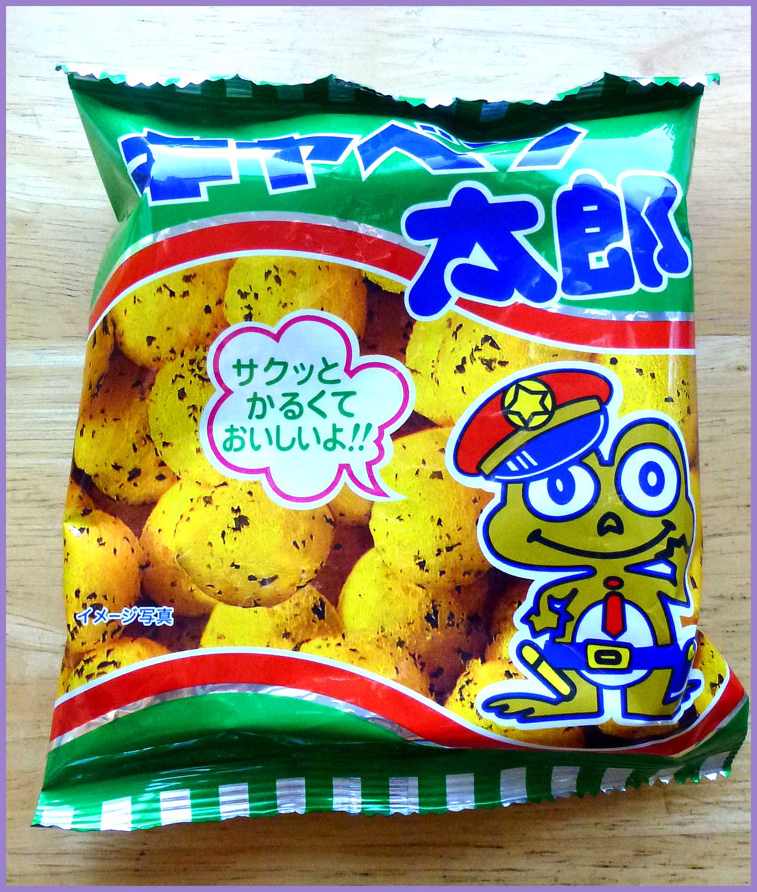
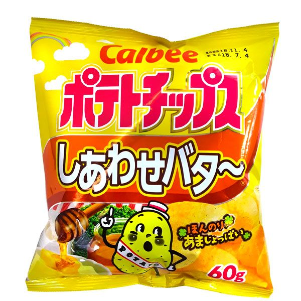
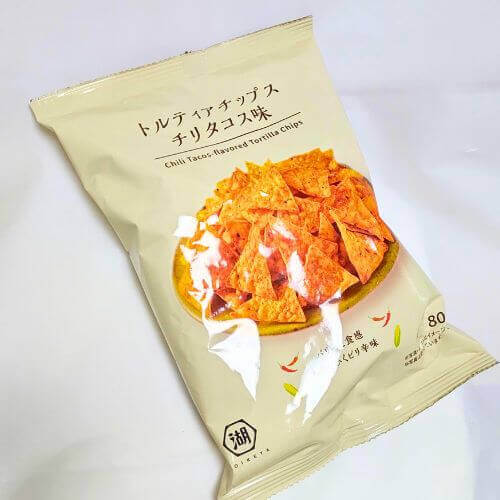
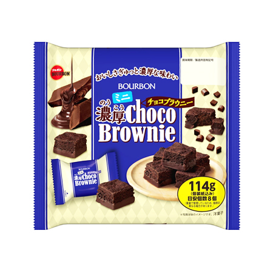
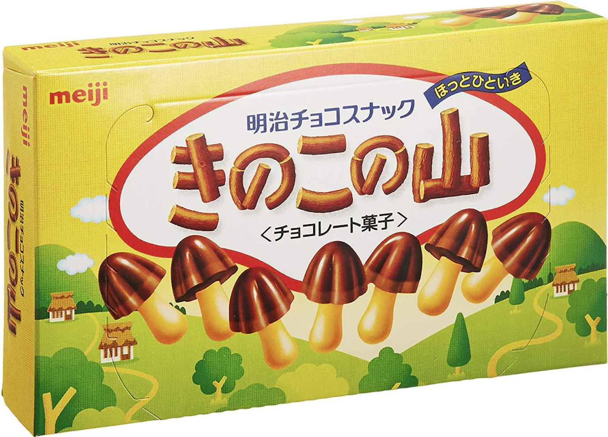

Snacks in Japan
Snacking culture in Japan is very different from America. Snacks are typically sold in single-serving packaging, and many are even individually wrapped. Snacks also have very different flavor profiles.
My Favorite Japanese Snacks
- Kyabetsu Taro

- Shiawase Butter Chips

- Taco Chips

- Choco Brownie

- Kinoko no Yama

Traditional Japanese Snacks
While these modern snacks can be found everywhere, traditional Japanese snacks are easy to find, too! Many grocery stores carry traditional snacks, and there are specialty stores everywhere. To learn more about traditional Japanese snacks, you can read the Wikipedia article below. Which one would you most like to try?
Learn About Traditional Japanese Snacks